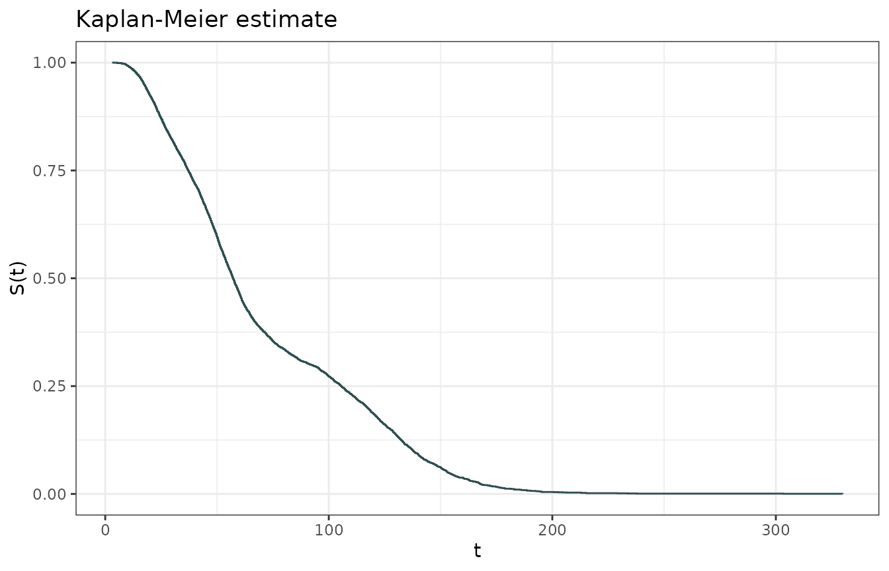

Intercept only fits
intercept_only.RmdIntercept only fits should be done setting
intercept = TRUE and using NULL for the left
side of the formula.
library(lnmixsurv)
library(dplyr)
library(tidyr)
library(readr)
mod1 <- survival_ln_mixture(Surv(y, delta) ~ NULL,
sim_data$data,
iter = 4000,
warmup = 2000,
intercept = TRUE,
starting_seed = 15,
em_iter = 50,
mixture_components = 3
)
chains <- bayesplot::mcmc_trace(mod1$posterior)We can easily see the chains with the mcmc_trace()
function from bayesplot package. Since it’s just an
example, we don’t expect that the chains have already converged.
bayesplot::mcmc_trace(mod1$posterior)Furthermore, we can use the ggplot2 package to visualize
the Kaplan-Meier survival estimates, created with the
survfit() function from the survival package
and the tidy() function from the broom
package.
km <- survival::survfit(
Surv(y, delta) ~ NULL,
sim_data$data
) |>
broom::tidy() # Kaplan-Meier estimate
ggplot(km) +
geom_step(aes(x = time, y = estimate),
color = "darkslategrey"
) +
labs(
title = "Kaplan-Meier estimate",
x = "t",
y = "S(t)"
) +
theme_bw()
The predictions can be easily made with a “empty” data.frame with one row.
predictions <- predict(mod1,
new_data = data.frame(val = NA),
type = "survival",
eval_time = seq(0, 300)
) |>
tidyr::unnest(cols = .pred)ggplot2 can be used to visualize the model’s fitted
survival estimates for the data.
ggplot() +
geom_step(aes(x = time, y = estimate, linetype = "Kaplan-Meier"),
color = "darkslategrey", data = km
) +
geom_line(aes(x = .eval_time, y = .pred_survival, linetype = "Fitted"),
color = "darkslategrey",
data = predictions, alpha = 0.7
) +
labs(
title = "Fitted survival estimates",
x = "t",
y = "S(t)",
linetype = "Type"
) +
theme_bw()